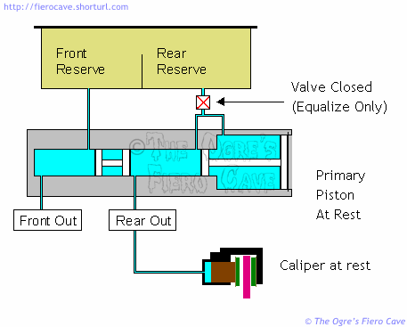
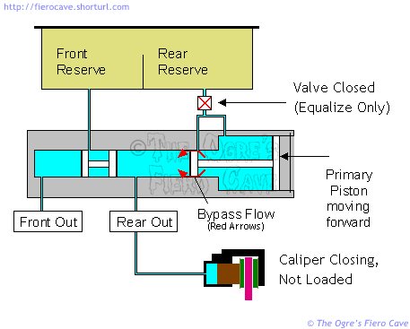
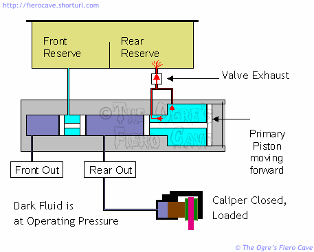
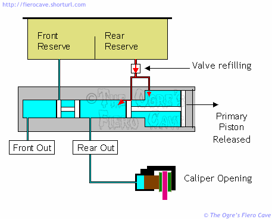
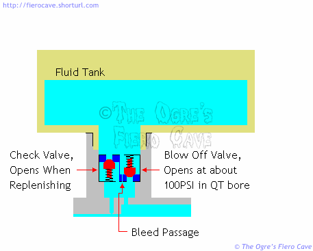
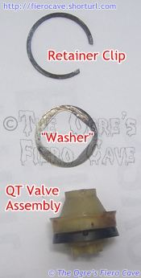
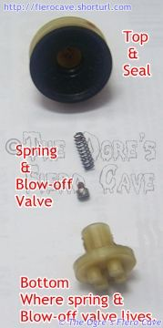
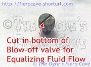

Go Home
Site Map
Go Home
Site Map
Quick Take-up Master Cylinder
This master cylinder was developed by GM in the late 1970's to allow the use of "low drag" disk brake calipers. The primary piston has two different diameters. The large bore, 36mm, delivers low pressure, high volume, fluid to the calipers to take up the slack. When the pressure builds up to a certain level, the main bore, 25.4mm in 84-87 Fiero, takes over and generates the actual brake pressure.
There is a very nice explanation and animation of how a normal master cylinder operates at How Stuff Works but I could not find a decent visual on the Quick Take-up system. Once you understand a regular system, these slides should give you a better idea of how fluid moves in a step bore setup. Since the function of the secondary piston is the same as a normal system I've left out most of it. I've also left out details like return springs that aren't relevant at the moment.
How "Quick Take-up" Works
Our fist slide shows everything at rest. The QT valve is only allowing enough fluid movement to equalize thermal expansion and contraction.

The second slide shows the take-up phase. This is what happens when you've started to apply the brakes but haven't yet reached operating pressure in the system. Notice the fluid flow around the small section of the primary piston. This bypass flow is possible because the MC uses "cup" seals for everything but the large seal on the Primary piston. Cup seals can only block fluid flow in one direction. (The Secondary piston has two seals arranged "bottom to bottom." The area between its seals never sees any fluid pressure.)

There's allot of fluid moving during the take up phase of the cycle and it's actually moving faster than you think. Don't forget a basic rule of fluids... When you squeeze a fluid from a large area into a narrow area the fluid accelerates.
Our next slide shows what happens when the calipers are closed against the rotor and starting to brake the car. The QT valve is now venting pressure from the large section of the primary piston. This leaves the small section free to develop full brake pressure and significantly reduces brake pedal effort.
Update note: The QT valve will open anytime flow is too fast for rear circuit to take fluid flow, like bleeding, etc. It's normal to see a geyser in the rear section of the reserve tank. Keep the tank close when you are doing bleeding.

In our fourth slide the brakes have been released and are returning to rest. The QT valve now shifts to replenish mode and allows the primary piston to draw in fluid exhausted during the full braking portion of the cycle. It also compensates for any fluid that doesn't return from the calipers due to wear of the pads. (Pad wear increases caliper volume as the brakes are used.)

In our last slide we can see a schematic of the QT valve. I've drawn it the way it works, not the way it looks. In the real QT valve the bleed passage that allows the MC to equalize is cut into the face of the Blow Off valve. The check valve is actually formed by the cup seal between the QT valve and master cylinder.

QT Valve Exploded View
  
The "seal" will act like a valve to refill the Primary Piston.
Performance
As I mentioned above fluid accelerates when it's squeezed into a smaller area. The result of this is the take-up phase happens faster than you are pushing the pedal. Even better, the acceleration applies to both circuits. Given the same hardware for the pedal and at the wheels, a step bore MC will always close the calipers faster than a straight bore. The result of accelerating the take-up phase is the brakes are more responsive in a system using a Quick Take-up master cylinder.
Because the QT function increases available volume, we gain some flexibility in the working bore. Since we don't have as big an issue with volume, we can reduce the main bore diameter to gain increased working pressure. (Big piston more volume, small piston more pressure.) More pressure available from the master cylinder means more stopping power at the wheels.
Step Bore MC's will also tolerate a greater range of pad clearance in the caliper. This means you maintain a higher pedal even with rear calipers that have excessive pad clearance. (Excessive rear pad clearance is an epidemic in Fiero and other GM cars. It's probably the greatest factor in under performing 4 wheel disk brakes.)
It Broke!
There are several ways that a Master Cylinder can fail...
QT valve failure. This is unique to QT MC. You have low pedal but no fluid loss. As long as the brakes are adjusted correctly you'll have low pedal but it will feel solid and need only normal effort. IF the brakes are too far out of adjustment you'll likely squeeze the MC dry and have no brakes or a seriously low pedal. At this point the brakes will behave allot like there is air in them. You'll probably be able to pump them up but they will go flat again after you let off for a couple seconds.
Secondary piston seal failure. One seal fails and exhausts fluid to the MC tank. This has about the same effect as a ruptured line in either brake circuit. (It is possible but rare for both seals on the secondary piston to fail.)
Primary piston seal failure. The effect of this depends on which one quit. Failure of the small one will leave the rear brakes dead. The brake pressure will simply vent to the tank. The large seal can, and likely will, leave you with low pedal but if the brakes are adjusted like they should be, you will still be able to stop the car with normal pedal effort. This will last until the fluid supply runs out at which point you'll have no brakes. Fortunately in most cases the large seal tends to drip fluid rather than squirt large volumes. (It is possible that both seals on the Primary piston can fail. Usually the rear seal fails and is undetected or ignored and then the front seal lets go.)
There is one more common type of failure you can cause by "pedal bleeding" the system. In this case you can trash the front seal of one or both pistons by driving them into accumulated trash in the section of the MC bore that is normally unused in a working system. The worst offender here is the front seal on the secondary piston. It is also possible to jam the secondary piston so it won't return. This is quite common in vehicles that have never had the fluid changed. It's also common in rebuilt master cylinders that aren't reworked very well. Problems of this type will ruin a Master Cylinder that seemed ok prior to bleeding.
In all failure cases the MC needs to be rebuilt or replaced. Always try to obtain new rather than rebuilt master cylinders. (See the rebuilding notes in the main article.)
Patent Notes
You can search the database at the US Patent and Trademark Office web site.
- Go to the Patent Office's Quick Search page.
- Enter "Quick Take-up" in the Term 1 box
- Enter "General Motors" in the Term 2 box
- Set "Select Years" to "All Years"
- Leave all other boxes as they are.
- Click search.
This will return 16 documents related to the Quick Take-up master cylinder. The one to start with is # 4,133,178. That one gives a clearer description and has better illustration. Our version of the MC looks close to Patent # 4,208,881. The other ones listed cover details of the installation and different blow off valve types. (#4,213,655 has the details on cross fed brakes like those in Grand Am and other FWD cars.)
To view the images you will need a compatible TIFF Viewer. The help button on any of the database pages will point you to the one USPTO recommends.
If you have problems getting the plugin to work, try reloading it with the "modify my windows registry" box checked. (It wouldn't work in IE 5.5sp1 until I did that.) Since most people don't use TIFF images much this shouldn't be a problem.
I found it was easier to understand the patents once I printed the images so I could lay out the whole thing as I read the text. The "abstract" portion explains most of the thing in clear terms. The details are handy for understanding exactly how some small part of the thing works. The "claims" section is gibberish to most people.
How Fiero (and others) depart from the patent schematics.
The Fiero MC is very close to patent #4,208,881. A couple changes to the flow valve are important.
- The Flow valve does away with the extra bleed passage.
- The blow off valve does not use a ball.
Instead, the Fiero version has a cylindrical blow off valve with a small groove cut in the face. The groove serves as the bleed passage.
The Fiero valve is like the one in the patent in all other ways. This newer version of the valve is simpler to make than the one in the patent since the majority of parts are now simple injection mold jobs. In addition, the Fiero version is probably a little more reliable because the groove should be less prone to blockage than the one in the patent.
Thanks to Indiana Resto Guy for providing the MC that gave up this data.